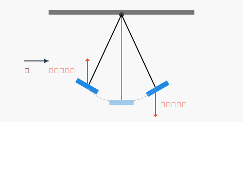

### A Pendulum Whose Amplitude Increases with Wind!? #### Why Did the Tacoma Narrows Bridge Collapse? <img src="assets/images/title.png" height="400px"> --- ### Today's Topics <div class="simple-box"> * Why did the Tacoma Narrows Bridge collapse? * The bridge collapsed on November 7, 1940 * Equations of motion for harmonic and damped oscillations * A simple pendulum model * Bernoulli's theorem and lift, negative lift * Vibration equation with negative damping due to lift * Mechanism of **self-excited vibration** * A small difference in the equation of motion can drastically change the result! </div> --- ### The Collapse of the Tacoma Narrows Bridge <div class="simple-box"> * Collapsed on November 7, 1940 * The bridge undulated significantly due to wind! * Let's watch the actual video! </div> <img src="assets/images/Tacoma_Narrows_Bridge.jpg" height="400px"> --- ### The Current Tacoma Narrows Bridge <div class="simple-box"> * Rebuilt in 1950 * A second bridge was constructed in 2007 </div> <img src="assets/images/Tacoma_Narrows_Bridge_(117561801).jpeg" height="350px"> --- ### Important Notes <div class="simple-box"> * The actual cause of the bridge collapse is more complex * Wind tunnel tests and numerical simulations are used in bridge design * But today we'll consider the simplest model * We'll focus on the mechanism of **self-excited vibration**! </div> --- ## Equations of Motion for Vibration --- ### Pendulum Motion <div class="simple-box"> * Lift the pendulum and release it * A restoring force acts to move it toward the center due to gravity * Swings to the opposite end * This repetition causes the pendulum to oscillate </div> <img src="assets/images/harmonic-oscillator-pendulum.svg" height="400px"> --- ### Equation of Motion for Harmonic Oscillation $$ m\frac{d^2x}{dt^2} + \underbrace{kx}_{\text{restoring force}} = 0 $$ $$ x(t) = A \cos\left(\sqrt{\frac{k}{m}} t + \varphi \right) $$ <div class="highlight-box"> * This motion is called **harmonic oscillation** </div> --- ### Equation of Motion for Damped Oscillation <div class="simple-box"> * A real pendulum doesn't continue oscillating forever * The oscillation gradually decreases due to damping forces like air resistance and friction </div> $$ m\frac{d^2x}{dt^2} + \underbrace{\beta \frac{dx}{dt}}_{\text{damping force}} + kx = 0 $$ --- ### Damped Oscillation <img src="assets/images/damping-vibration.png" height="250px"> $$ x(t) = A \exp(-\beta t) \cos\left(\sqrt{\frac{k}{m}} t + \varphi \right) $$ <div class="highlight-box"> * The oscillation gradually decreases! </div> --- ## Lift and Negative Lift --- ### Fluid Motion <div class="simple-box"> * Air and water are examples of "flowing substances" called fluids * Forces exerted on objects by wind or water flow can be understood through fluid motion </div> <img src="assets/images/fluid-flow.png" height="300px"> --- ### Bernoulli's Theorem <div class="simple-box"> * A theorem that describes the relationship between fluid velocity and pressure * When fluid velocity increases, pressure decreases * When fluid velocity decreases, pressure increases * Since air is light, we'll ignore potential energy today </div> $$ p + \frac{1}{2}\rho v^2 + \cancel{\rho gh} = \text{const} $$ --- ### Lift <div class="simple-box"> * Fluid velocity increases on the upper side of the plate, pressure decreases * Fluid velocity decreases on the lower side of the plate, pressure increases * The pressure difference creates an upward force on the plate (**lift**) </div> --- ### Negative Lift <div class="simple-box"> * Fluid velocity decreases on the upper side of the plate, pressure increases * Fluid velocity increases on the lower side of the plate, pressure decreases * The pressure difference creates a downward force on the plate (**negative lift**) </div> --- ### Applications of Lift and Negative Lift <div class="simple-box"> * Lift creates an upward force that allows an airplane to fly * Negative lift creates a downward force that keeps an F1 car pressed against the track </div> <div class="container"> <div class="col"> </div> <div class="col"> <img src="assets/images/adjustable-rear-wings.jpg" width="600px"> </div> </div> --- ## Self-Excited Vibration --- ### Self-Excited Vibration <div class="simple-box"> * The pendulum is subjected to lift due to wind * The lift creates a vibration that amplifies the motion! (**self-excited vibration**) </div>  --- ### Familiar Example <div class="simple-box"> * If you swing the swing with the vibration, the vibration becomes larger! * The same thing happens with lift! </div> <img src="assets/images/swing.png" height="400px"> --- ### Equation of Motion for Self-Excited Vibration $$ m\frac{d^2x}{dt^2} \underbrace{ - \beta \frac{dx}{dt}}_{\text{opposite sign!}} + kx = 0 $$ <div class="simple-box"> * Vibration with negative damping * Just a change in sign... * What happens? </div> --- ### General Solution $$ x(t) = A \exp(\beta t) \cos\left(\sqrt{\frac{k}{m}} t + \varphi \right) $$ <div class="highlight-box"> * Vibration becomes larger! </div> --- ### Why Did the Tacoma Narrows Bridge Collapse? <div class="simple-box"> * Self-excited vibration mechanism worked! * The bridge undulated significantly due to wind! </div> <img src="assets/images/Tacoma_Narrows_Bridge.jpg" height="400px"> --- ### Conclusion <div class="simple-box"> * Equations of motion for harmonic oscillation can represent the motion of a pendulum! * Equations of motion for damped oscillation can represent the motion of a pendulum that gradually decreases in amplitude! * Forces due to fluid flow and plate tilt create upward lift or downward negative lift! * Equations of motion for vibration with negative damping can represent the mechanism of self-excited vibration! </div> --- ### One Sign Changes the World! $$ m\frac{d^2x}{dt^2} + \beta \frac{dx}{dt} + kx = 0 $$ $$ m\frac{d^2x}{dt^2} - \beta \frac{dx}{dt} + kx = 0 $$ <div class="container"> <div class="col"> <img src="assets/images/damping-vibration.png" width="400px"> </div> <div class="col"> </div> --- ### Additional Notes <div class="simple-box"> * The actual fluid dynamics of bridge structures is more complex * It is believed that the Tacoma Narrows Bridge collapsed due to aeroelastic flutter * Torsional vibration is also a significant cause * **Self-excited vibration alone is not the cause!** * But today we focused on the simplest self-excited vibration! </div> --- ### LT Speaker Recruitment <div class="simple-box"> * We are recruiting LT speakers at the Physics Meeting! * Any genre is OK! * If there is no application, the host will open a Jaiyan Ressaitaru under the guise of LT... * If you are interested, please join the Physics Meeting Discord server! </div> <img src="assets/images/qrcode.png" width="200px"> --- ### Announcement <div class="simple-box"> * Next meeting is scheduled for May 17 * We want everyone to watch the physics video together * We welcome any proposals to watch the video together! </div>